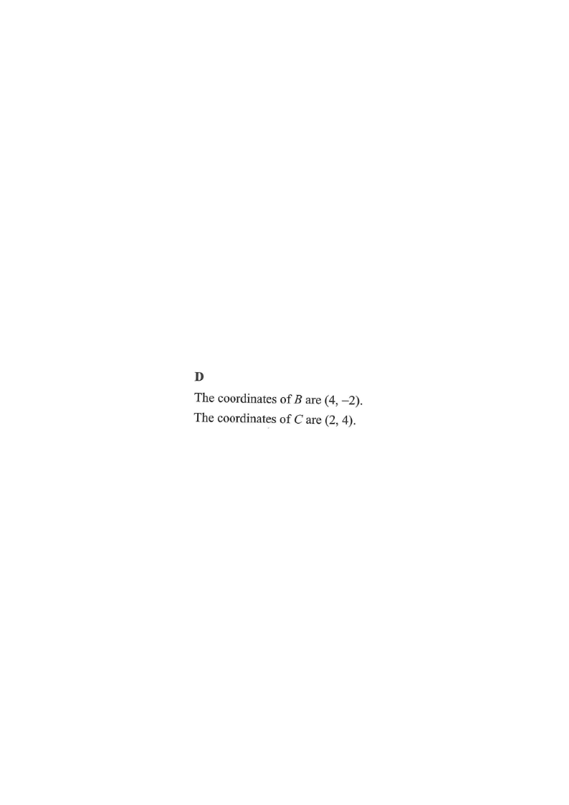

[2019 MC #25] The coordinates of the point $A$ are $(-5,-2)$. $A$ is translated rightwards by $9$ units to the point $B$. $B$ is then rotated anticlockwise about the origin through $90^\circ$ to the point $C$. Find the $y$-coordinate of $C$.

Moving “rightwards by $9$ units” adds $9$ to the $x$-coordinate and leaves the $y$-coordinate unchanged.
$$A(-5,-2)\;\xrightarrow{\;+9\text{ in }x\;}\;B(-5+9,\,-2)=(4,-2)$$
So $B=(4,-2)$.
The shift is shown in red: from $A(-5,-2)$ to $B(4,-2)$ the $x$-coordinate increases by $9$ while the $y$-coordinate stays at $-2$.
For an anticlockwise rotation of $90^\circ$ about the origin:
$$(x,y)\;\longrightarrow\;(-y,\,x)$$
Apply this to $B(4,-2)$:
$$C=(-(-2),\,4)=(2,\,4)$$
The green arc shows the rotation from $B$ to $C$.
The coordinates of $C$ are $(2,\,4)$,
so the $y$-coordinate of $C$ is
$$y_C = 4$$
The point $C$ is plotted in pink in the diagram.
Question. The point \(A(-3,\,5)\) is translated \(7\) units to the left to the point \(B\). The point \(C\) is obtained by rotating \(B\) anticlockwise about the origin \(O\) through \(90^{\circ}\). Find the \(y\)-coordinate of \(C\).